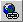
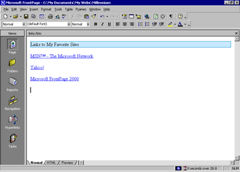

| ||||
Now only the Links page remains to be edited. For this tutorial, this page will contain a list of text hyperlinks to some other sites on the World Wide Web.
When you create your own Web sites, you can create hyperlinks pointing to other Web sites that relate to the subject matter of your own pages. This lets visitors browse to similar sites without having to search for them.
To begin the Links page
Next, you will create a simple text animation of the paragraph heading. FrontPage includes a collection of fun text effects that you can easily apply to text headings or entire paragraphs.
To create a dynamic text effect
FrontPage displays the DHTML Effects toolbar. Here, you make sequential selections that will create a simple dynamic HTML (DHTML) script to animate the text when it is displayed in a Web browser.
Dynamic HTML is an extension of the HTML language that lets you create presentation effects for text and objects, much like in a Microsoft PowerPoint slide show. Using the DHTML Effects toolbar, you can add simple effects to your pages without the need to know programming.
This will instruct the Web browser to begin the effect when the page loads.
FrontPage applies the Hop effect. In a Web browser, this effect will cause each word to bounce onto the page.
The DHTML Effects toolbar closes and the dynamic text effect is indicated in Page view with light blue shading.
Next, you will add text hyperlinks pointing to other sites on the World Wide Web. With FrontPage, you can create text hyperlinks in a number of ways, which you will learn next. When you create your own Web sites, you can create hyperlinks using your preferred method.
To create hyperlinks from text
FrontPage displays the Create Hyperlink dialog box. Here, you specify the target of the hyperlink you are creating. This can be a page or a file in your Web site, on your local file system, on a Web server, or on another site on the World Wide Web.
"HTTP" stands for Hypertext Transfer Protocol. This is the Internet protocol that allows World Wide Web browsers to retrieve information from Web servers. The text "www.msn.com" is the URL of MSN, the Microsoft Network.
The words "MSN - The Microsoft Network" have changed from black default text to blue text, and the words are now underlined to indicate the presence of a hyperlink. When this page is displayed in a Web browser, clicking this hyperlink will retrieve and display the MSN home page.
Before creating the next hyperlink, you'll insert a special character symbol to indicate a trademark on the current page.
To insert special characters or symbols
FrontPage displays the Symbol dialog box. Here, you can select and insert special characters at the insertion point. You can insert multiple symbols while this dialog box is displayed.
FrontPage inserts the trademark symbol after the letters MSN. You can use the Symbol command to insert characters that you may not be able to type directly with your keyboard.
Next, you will create an automatic hyperlink. This method of creating hyperlinks is quick and easy, because it lets you bypass the Create Hyperlink dialog box.
To create an automatic hyperlink
Yahoo! is a popular Internet service that lets you look for information on the World Wide Web using search keywords and subject categories.
As soon as you press ENTER, the URL you typed changes from black to blue text and is underlined to indicate the presence of a hyperlink. Like other Microsoft Office applications, FrontPage supports automatic hyperlink creation.
Since a URL by itself is not always very descriptive, however, you'll want to change it to the name of the site that the hyperlink points to. You can overtype the text without erasing the hyperlink.
The hyperlink still points to the same URL, but it is now labeled with the site's name.
Next, you'll create a hyperlink using your Web browser. This method of creating hyperlinks is the most accurate, because you actually visit the page the hyperlink will point to before creating the hyperlink. In addition, FrontPage copies the URL from the Web browser address field, so once the address is verified, you don't have to type it again.
If you do not have access to the World Wide Web while taking the FrontPage Tutorial, skip the following procedure and practice these steps the next time you're connected to the Internet.
To create a verified hyperlink

Hyperlink buttonFrontPage displays the Create Hyperlink dialog box.
FrontPage starts your Web browser. When you visit the page that the hyperlink should point to and then switch back to FrontPage, the URL box will contain the address of the target page.
The Web browser displays the Microsoft FrontPage home page, where you can learn more about FrontPage, download updates, and find answers to common questions.
The URL of the Microsoft FrontPage home page is now entered into the URL box in the Create Hyperlink dialog box.
The words "Microsoft FrontPage 2000" are now underlined to indicate the presence of a hyperlink.
Your page should now look like this:

Did you find this material useful? Gripes? Compliments? Suggestions for other articles? Write us!
© 1999 Microsoft Corporation. All rights reserved. Terms of use.